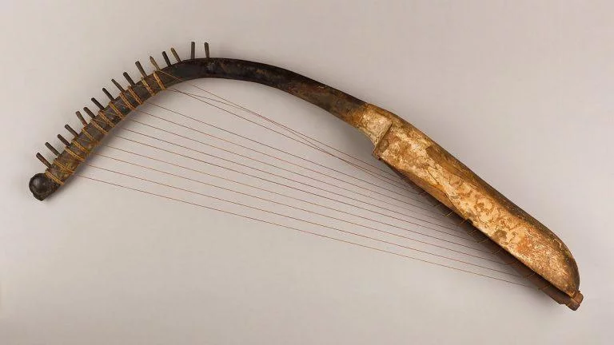
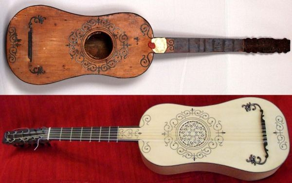

La guitarra tiene una historia muy antigua que se remonta a miles de años.
Sus primeros antecedentes aparecen en instrumentos de cuerda utilizados por distintas civilizaciones antiguas, como los egipcios, griegos y pueblos de Medio Oriente.

Uno de sus principales antecesores fue el Oud, un instrumento árabe de cuerdas pulsadas que influyó fuertemente en el desarrollo de la guitarra moderna.
También fueron importantes el laúd europeo y la vihuela española, muy populares durante la Edad Media y el Renacimiento.

Con la llegada de la influencia árabe a España, estos instrumentos comenzaron a transformarse y a combinar características, dando origen a las primeras guitarras reconocibles.

Desde sus comienzos, la guitarra fue utilizada para acompañar canciones, transmitir emociones y formar parte de distintas expresiones culturales alrededor del mundo.